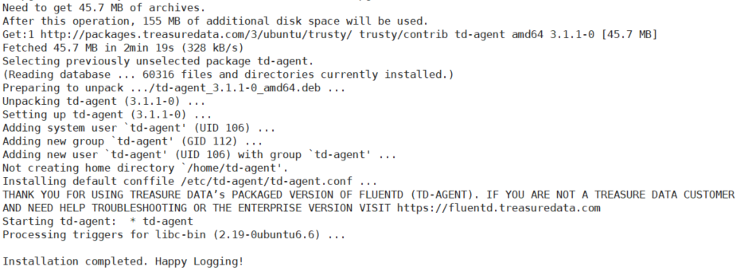
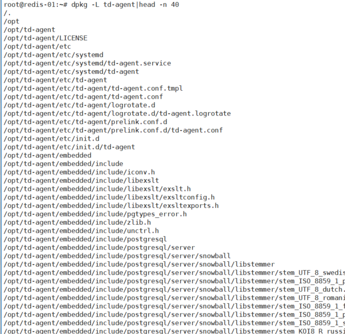
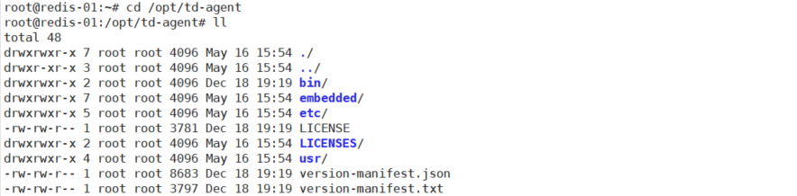
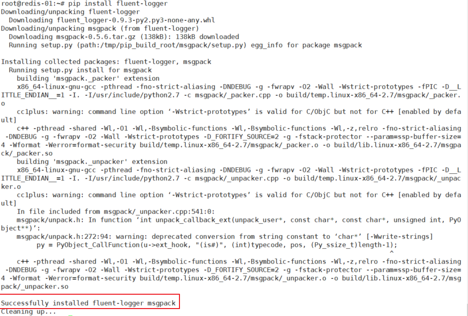
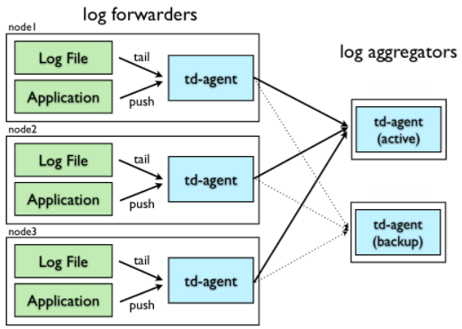

简介与安装 参考链接
What？
Fluentd是一个开源的数据收集器，专为处理数据流设计，有点像 syslogd ，但是使用JSON作为数据格式。它采用了插件式的架构，具有高可扩展性高可用性，同时还实现了高可靠的信息转发。
据分(Y)析(Y)，Fluentd是由Fluent+d得来，d生动形象地标明了它是以一个守护进程的方式运行。官网上将其描述为data collector，在使用上，我们可以把各种不同来源的信息，首先发送给Fluentd，接着Fluentd根据配置通过不同的插件把信息转发到不同的地方，比如文件、SaaS Platform、数据库，甚至可以转发到另一个Fluentd。
总结一下，数据流殊途，同归与Fluentd，Fluentd做一些诸如过滤、缓存、路由等工作，将其转发到不同的最终接收方。
用Fluentd处理数据还能保证一定的实时性，其提供种类丰富的客户端lib，很适合处理单位时间emit出log数量巨大的场景。从v10后，Fluentd 不支持 Windows。
其采用Ruby编写，比较注重性能的地方采用C编写，Ruby的创始人松本老师这样评价Fluentd：
Fluentd proves you can achieve programmer happiness and performance at the same time. A great example of Ruby beyond the Web.
Heroku的联合创始人Adam Wiggins说的挺有道理：
Logs are streams, not files. I love that Fluentd puts this concept front-and-center, with a developer-friendly approach for distributed systems logging.
更多信息请看 这里 。
How？ [官方帮助文档]https://docs.fluentd.org/v1.0/articles/quickstart
准备工作
设置NTP时间同步服务
增加文件句柄数
优化网络内核配置参数
1 设置NTP时间同步服务 ntpd ，以d结尾，是一个守护进程，全称是Network Time Protocol (NTP) daemon，它通过与一个Internet标准时钟服务器同步来维护系统时钟，同时也可以将本机做为一个时钟服务器对外提供时钟同步服务。更多信息请man一下ntpd。
安装ntpd是为了防止Fluentd在收集log的时候出现非法的时间戳。
在Ubuntu下，apt-get即可安装：
$ sudo apt-get install ntp
之后查看ntpd是否启动成功（pgrep返回进程号）：
2 增加文件句柄数 增加系统文件描述符的最大数量
通过ulimit查看当前的文件描述符的最大数量：
如果是1024，那是远远不够的，将下面4行添加到 /etc/security/limits.conf 中，重启机器。
root soft nofile 65536 root hard nofile 65536 * soft nofile 65536 * hard nofile 65536
之后用ulimit查看，应该是65536了。
3 优化网络内核配置参数 (Optional)优化机器内核TCP/IP参数
如果Fluentd处于一个高负载的运行环境，比如一个机器中运行了多个Fluentd实例，那么最好将下面的参数添加到 /etc/sysctl.conf 中：
net.ipv4.tcp_tw_recycle = 1 net.ipv4.tcp_tw_reuse = 1 net.ipv4.ip_local_port_range = 10240 65535
然后执行 sysctl -w 或者重启机器使之生效。
这个跟TCP/IP的细节有关系，我没有深究，貌似是为了防止短连接数过多，机器处于 TIME_WAIT 状态的TCP连接数过多，开启快速回收与重用。具体请参考 这里 。
安装Fluentd
测试环境使用ubuntu
有 很多种方式 来安装Fluentd，比如通过Ruby的Gem，以及Ubuntu的deb、OS X的Homebrew。
采用Ruby的Gem安装比较简单，安装的是基本版的Fluentd，即不自带 /etc/init.d 脚本，在运行时内存分配采用的是操作系统默认的方式；
而采用.rpm/.deb for Linux的方式安装呢，安装的是一个由 Treasure Data, Inc 维护的稳定版本Fluentd，又被称为td-agent。为了保持一个良好的灵活性，Fluentd采用Ruby编写，性能要求比较高的地方采用C编写，考虑到一般的用户可能安装操作Ruby有困难，因此该公司维护并提供了一个稳定版本的Fluentd。该版本的Fluentd在内存分配上采用了着重避免内存碎片分配实现 jemalloc 。两个版本的区别可以在这 查看 。
那么我们到底选用哪种方式呢，根据官方的文档。td-agent强调new features的稳定性，如果希望自己控制Fluentd的features，自己手动去更新，采用gem的方式安装。如果是第一次使用Fluentd或者在大规模的生产环境使用，推荐安装td-agent，每2-3个月，td-agent就会发布一个新的版本。
root@redis-01:~# lsb_release -a No LSB modules are available. Distributor ID: Ubuntu Description: Ubuntu 14.04.3 LTS Release: 14.04 Codename: trusty
查看到ubuntu的版本为trusty的，因此选择以下命令窒执行：
root@redis-01:~# curl -L https://toolbelt.treasuredata.com/sh/install-ubuntu-trusty-td-agent3.sh | sh

查询安装路径
root@redis-01:~# dpkg -L td-agent


启动Fluentd的守护进程 因为我们安装的是td-agent，自带 /etc/init.d/td-agent 脚本，通过该脚本启动Fluentd服务。
$ /etc/init.d/td-agent restart * Restarting td-agent td-agent $ /etc/init.d/td-agent status * ruby is running
同时还支持以下命令：
$ /etc/init.d/td-agent start $ /etc/init.d/td-agent stop $ /etc/init.d/td-agent restart $ /etc/init.d/td-agent status
配置文件在： /etc/td-agent/td-agent.conf
测试明细
root@redis-01:/opt/td-agent# ll /etc/init.d/td-agent -rwxr-xr-x 1 root root 6899 May 16 15:54 /etc/init.d/td-agent* root@redis-01:/opt/td-agent# /etc/init.d/td-agent status * td-agent is running root@redis-01:/opt/td-agent# ll /etc/td-agent/td-agent.conf -rw-r--r-- 1 root root 2381 May 16 15:54 /etc/td-agent/td-agent.conf root@redis-01:/opt/td-agent# ps -ef|grep td-agent td-agent 1545 1 0 15:54 ? 00:00:01 /opt/td-agent/embedded/bin/ruby /usr/sbin/td-agent --log /var/logtd-agent/td-agent.log --daemon /var/run/td-agent/td-agent.pid td-agent 1552 1545 0 15:54 ? 00:00:02 /opt/td-agent/embedded/bin/ruby -Eascii-8bit:ascii-8bit /usr/sbintd-agent --log /var/log/td-agent/td-agent.log --daemon /var/run/td-agent/td-agent.pid --under-supervisor root 1654 1324 0 16:26 pts/0 00:00:00 grep --color=auto td-agent
安装好后已经启动该服务了td-agentd
服务fluentd
路径
配置文件
/etc/td-agent/td-agent.cof
数据文件
/var/log/td-agent/td-agent.log
服务启动脚本ruby
/usr/sbin/td-agent
守护进程名
监听端口
8888
日志文件
/var/logtd-agent/td-agent.log
进程文件
/var/run/td-agent/td-agent.pid
默认在配置文件中td-agent在8888端口监听，接收来自HTTP的log信息，并把其路由到stdout（ /var/log/td-agent/td-agent.log ）,可以用curl命令测试：
$ curl -X POST -d 'json={"json":"message"}' http://localhost:8888/debug.test
之后可以打开 /var/log/td-agent/td-agent.log查看。
root@redis-01:/opt/td-agent# curl -X POST -d 'json={"json":"message"}' http://localhost:8888/debug.test root@redis-01:/opt/td-agent# tail -f /var/log/td-agent/td-agent.log 2018-05-16 15:54:11 +0800 [warn]: #0 [output_td] secondary type should be same with primary one primary="Fluent::Plugin::TreasureDataLogOutput" secondary="Fluent::Plugin::FileOutput" 2018-05-16 15:54:11 +0800 [info]: adding match pattern="debug.**" type="stdout" 2018-05-16 15:54:11 +0800 [info]: adding source type="forward" 2018-05-16 15:54:11 +0800 [info]: adding source type="http" 2018-05-16 15:54:11 +0800 [info]: adding source type="debug_agent" 2018-05-16 15:54:11 +0800 [info]: #0 starting fluentd worker pid=1552 ppid=1545 worker=0 2018-05-16 15:54:11 +0800 [info]: #0 [input_debug_agent] listening dRuby uri="druby://127.0.0.1:24230" object="Fluent::Engine" 2018-05-16 15:54:11 +0800 [info]: #0 [input_forward] listening port port=24224 bind="0.0.0.0" 2018-05-16 15:54:11 +0800 [info]: #0 fluentd worker is now running worker=0 2018-05-16 16:30:11.328487488 +0800 debug.test: {"json":"message"} root@redis-01:/opt/td-agent# curl -X POST -d 'json={"name":"booboo","home":"shanghai"}' http://localhost:8888/debug.test root@redis-01:/opt/td-agent# tail -f /var/log/td-agent/td-agent.log 2018-05-16 15:54:11 +0800 [info]: adding match pattern="debug.**" type="stdout" 2018-05-16 15:54:11 +0800 [info]: adding source type="forward" 2018-05-16 15:54:11 +0800 [info]: adding source type="http" 2018-05-16 15:54:11 +0800 [info]: adding source type="debug_agent" 2018-05-16 15:54:11 +0800 [info]: #0 starting fluentd worker pid=1552 ppid=1545 worker=0 2018-05-16 15:54:11 +0800 [info]: #0 [input_debug_agent] listening dRuby uri="druby://127.0.0.1:24230" object="Fluent::Engine" 2018-05-16 15:54:11 +0800 [info]: #0 [input_forward] listening port port=24224 bind="0.0.0.0" 2018-05-16 15:54:11 +0800 [info]: #0 fluentd worker is now running worker=0 2018-05-16 16:30:11.328487488 +0800 debug.test: {"json":"message"} 2018-05-16 16:32:06.244858932 +0800 debug.test: {"name":"booboo","home":"shanghai"}
Use Cases
修改配置文件vim /etc/td-agent/td-agent.conf
<source> @type forward port 24224 </source> <match fluentd.test.**> @type stdout </match>
重启服务
$ sudo /etc/init.d/td-agent restart
安装fluent-logger-python
apt-get install python-pip python-dev build-essential pip install fluent-logger
python程序
# test.py from fluent import sender from fluent import event sender.setup('fluentd.test', host='localhost', port=24224) event.Event('follow', { 'from': 'userA', 'to': 'userB' })
运行python程序，查看记录输出
$ python test.py $ tail -n 1 /var/log/td-agent/td-agent.log
明细
root@redis-01:~# vim /etc/td-agent/td-agent.conf root@redis-01:~# /etc/init.d/td-agent restart Restarting td-agent: * td-agent root@redis-01:~# /etc/init.d/td-agent status * td-agent is running root@redis-01:~# apt-get install python-pip python-dev build-essential Reading package lists... Done Building dependency tree Reading state information... Done root@redis-01:~# pip install fluent-logger root@redis-01:~# vim test.py # test.py from fluent import sender from fluent import event sender.setup('fluentd.test', host='localhost', port=24224) event.Event('follow', { 'from': 'userA', 'to': 'userB' }) root@redis-01:~# python test.py root@redis-01:~# tail -f /var/log/td-agent/td-agent.log 2018-05-16 17:08:35 +0800 [info]: adding match pattern="debug.**" type="stdout" 2018-05-16 17:08:35 +0800 [info]: adding match pattern="fluentd.test.**" type="stdout" 2018-05-16 17:08:35 +0800 [info]: adding source type="forward" 2018-05-16 17:08:35 +0800 [info]: adding source type="http" 2018-05-16 17:08:35 +0800 [info]: adding source type="debug_agent" 2018-05-16 17:08:35 +0800 [info]: #0 starting fluentd worker pid=10505 ppid=10500 worker=0 2018-05-16 17:08:35 +0800 [info]: #0 [input_debug_agent] listening dRuby uri="druby://127.0.0.1:24230" object="Fluent::Engine" 2018-05-16 17:08:35 +0800 [info]: #0 listening port port=24224 bind="0.0.0.0" 2018-05-16 17:08:35 +0800 [info]: #0 fluentd worker is now running worker=0 2018-05-16 17:09:02.000000000 +0800 fluentd.test.follow: {"to":"userB","from":"userA"} root@redis-01:~# python test.py root@redis-01:~# tail -f /var/log/td-agent/td-agent.log 2018-05-16 17:08:35 +0800 [info]: adding match pattern="fluentd.test.**" type="stdout" 2018-05-16 17:08:35 +0800 [info]: adding source type="forward" 2018-05-16 17:08:35 +0800 [info]: adding source type="http" 2018-05-16 17:08:35 +0800 [info]: adding source type="debug_agent" 2018-05-16 17:08:35 +0800 [info]: #0 starting fluentd worker pid=10505 ppid=10500 worker=0 2018-05-16 17:08:35 +0800 [info]: #0 [input_debug_agent] listening dRuby uri="druby://127.0.0.1:24230" object="Fluent::Engine" 2018-05-16 17:08:35 +0800 [info]: #0 listening port port=24224 bind="0.0.0.0" 2018-05-16 17:08:35 +0800 [info]: #0 fluentd worker is now running worker=0 2018-05-16 17:09:02.000000000 +0800 fluentd.test.follow: {"to":"userB","from":"userA"} 2018-05-16 17:11:32 +0800 [warn]: #0 no patterns matched tag="fluentd.booboo.zyadmin" ^C root@redis-01:~# cat test.py # test.py from fluent import sender from fluent import event sender.setup('fluentd.booboo', host='localhost', port=24224) event.Event('zyadmin', { 'from': 'userA', 'to': 'userB' })

高可用配置
本实验实现：
通过http搜集日志后转发给日志整合服务器，标准输出至/var/log/td-agent/td-agent.log
自动故障转移：日志整合服务器A挂了能自动建日志转发给B
日志代理服务器是单点
架构规划 
角色
ip地址
说明
日志代理服务器 log forwarders
192.168.1.5
搜集各种日志，可以有多台
日志整合服务器A log aggregators
192.168.1.6
汇总搜集来的日志并输出
日志整合服务器B log aggregators
192.168.1.7
backup
搭建明细 # 安装是一样的，重点看配置 # 日志代理服务器192.168.1.5 root@redis-01:~# vim /etc/td-agent/td-agent.conf <source> @type forward port 24224 </source> <match boobooha.**> @type forward <server> host 192.168.1.6 port 24224 </server> <server> host 192.168.1.7 port 24224 standby </server> <secondary> @type file path /var/log/td-agent/forward-failed </secondary> <buffer> flush_interval 60s </buffer> </match> root@redis-01:~# service td-agent restart # 日志整合服务器 192.168.1.6 root@redis-02:~# vim /etc/td-agent/td-agent.conf <source> @type forward port 24224 </source> <match boobooha.**> @type stdout </match> root@redis-01:~# service td-agent restart # 日志整合服务器 192.168.1.7 root@redis-03:~# vim /etc/td-agent/td-agent.conf <source> @type forward port 24224 </source> <match boobooha.**> @type stdout </match> root@redis-01:~# service td-agent restart # 日志代理服务器192.168.1.5 # root@redis-01:~# curl http://localhost:8888/boobooha -d 'json={"name":"这是一个ha的测试信息"}' # root@redis-01:~# tail -f /var/log/td-agent/td-agent.log 2018-05-21 10:13:10 +0800 [info]: adding match pattern="boobooha.**" type="forward" 2018-05-21 10:13:10 +0800 [warn]: #0 secondary type should be same with primary one primary="Fluent::Plugin::ForwardOutput" secondary="Fluent::Plugin::FileOutput" 2018-05-21 10:13:10 +0800 [info]: #0 adding forwarding server '192.168.1.6:24224' host="192.168.1.6" port=24224 weight=60 plugin_id="object:3fbeebf53c48" 2018-05-21 10:13:10 +0800 [info]: #0 adding forwarding server '192.168.1.7:24224' host="192.168.1.7" port=24224 weight=60 plugin_id="object:3fbeebf53c48" 2018-05-21 10:13:10 +0800 [info]: adding source type="forward" 2018-05-21 10:13:10 +0800 [info]: adding source type="http" 2018-05-21 10:13:10 +0800 [info]: #0 starting fluentd worker pid=2078 ppid=2073 worker=0 2018-05-21 10:13:10 +0800 [info]: #0 delayed_commit_timeout is overwritten by ack_response_timeout 2018-05-21 10:13:10 +0800 [info]: #0 listening port port=24224 bind="0.0.0.0" 2018-05-21 10:13:10 +0800 [info]: #0 fluentd worker is now running worker=0 # 日志整合服务器 192.168.1.6 查看标准输出的搜集的日志信息 root@redis-02:~# tail -f /var/log/td-agent/td-agent.log 2018-05-21 10:10:40 +0800 [info]: gem 'fluent-plugin-s3' version '1.1.0' 2018-05-21 10:10:40 +0800 [info]: gem 'fluent-plugin-td' version '1.0.0' 2018-05-21 10:10:40 +0800 [info]: gem 'fluent-plugin-td-monitoring' version '0.2.3' 2018-05-21 10:10:40 +0800 [info]: gem 'fluent-plugin-webhdfs' version '1.2.2' 2018-05-21 10:10:40 +0800 [info]: gem 'fluentd' version '1.0.2' 2018-05-21 10:10:40 +0800 [info]: adding match pattern="boobooha.**" type="stdout" 2018-05-21 10:10:40 +0800 [info]: adding source type="forward" 2018-05-21 10:10:40 +0800 [info]: #0 starting fluentd worker pid=2263 ppid=2258 worker=0 2018-05-21 10:10:40 +0800 [info]: #0 listening port port=24224 bind="0.0.0.0" 2018-05-21 10:10:40 +0800 [info]: #0 fluentd worker is now running worker=0 2018-05-21 10:16:54.646801298 +0800 boobooha: {"name":"这是一个ha的测试信息"}
以上实验能够看到搜集的日志成功的转发到了192.168.1.6这台日志整合服务器上，接下来我们测试如果这台日志整合服务器A挂了后，日志搜集服务器是否会将日志转发给192.168.1.7上。
# 手动停止192.168.1.6上的td-agent服务 root@redis-02:~# service td-agent stop Stopping td-agent: * td-agent root@redis-02:~# service td-agent status * td-agent is not running # 192.168.1.5 # 2018-05-21 10:59:04 +0800 [warn]: #0 detached forwarding server '' host="192.168.1.6" port=24224 phi=16.06797998486109 phi_threshold=16 2018-05-21 10:59:04 +0800 [warn]: #0 using standby node 192.168.1.7:24224 weight=60 # root@redis-01:~# curl http://localhost:8888/boobooha -d 'json={"name":"这是一个ha的测试信息","info":"测试HA"}' root@redis-01:~# date Mon May 21 10:59:05 CST 2018 # 192，168.1.7上观察是否成功获取到日志信息 root@redis-03:~# tail -f /var/log/td-agent/td-agent.log 2018-05-21 10:10:33 +0800 [info]: gem 'fluent-plugin-s3' version '1.1.0' 2018-05-21 10:10:33 +0800 [info]: gem 'fluent-plugin-td' version '1.0.0' 2018-05-21 10:10:33 +0800 [info]: gem 'fluent-plugin-td-monitoring' version '0.2.3' 2018-05-21 10:10:33 +0800 [info]: gem 'fluent-plugin-webhdfs' version '1.2.2' 2018-05-21 10:10:33 +0800 [info]: gem 'fluentd' version '1.0.2' 2018-05-21 10:10:33 +0800 [info]: adding match pattern="boobooha.**" type="stdout" 2018-05-21 10:10:33 +0800 [info]: adding source type="forward" 2018-05-21 10:10:33 +0800 [info]: #0 starting fluentd worker pid=2199 ppid=2194 worker=0 2018-05-21 10:10:33 +0800 [info]: #0 listening port port=24224 bind="0.0.0.0" 2018-05-21 10:10:33 +0800 [info]: #0 fluentd worker is now running worker=0 2018-05-21 10:59:05.424160144 +0800 boobooha: {"name":"这是一个ha的测试信息","info":"测试HA"}
可以看到，实现了日志整合服务器的自动故障转移。
测试：重新启动日志整合服务器A，新搜集的日志将被转发给哪台整合服务器？
root@redis-02:~# service td-agent start Starting td-agent: * td-agent root@redis-01:~# tail -n 1 /var/log/td-agent/td-agent.log 2018-05-21 11:02:48 +0800 [warn]: #0 recovered forwarding server '' host="192.168.1.6" port=24224 root@redis-01:~# curl http://localhost:8888/boobooha -d 'json={"name":"重新启动A"}' root@redis-02:~# tail -n 1 /var/log/td-agent/td-agent.log 2018-05-21 11:03:37.759968176 +0800 boobooha: {"name":"重新启动A"} # 可以看到重启A后，新搜集的日志将会转发给A，A即配置文件中作为主的服务器。
监控 进程 存在两个ruby进程，具体如下所示：
root@redis-03:~# ps w -C ruby -C td-agent --no-heading 2496 ? Sl 0:00 /opt/td-agent/embedded/bin/ruby /usr/sbin/td-agent --log /var/log/td-agent/td-agent.log --daemon /var/run/td-agent/td-agent.pid 2501 ? Sl 0:00 /opt/td-agent/embedded/bin/ruby -Eascii-8bit:ascii-8bit /usr/sbin/td-agent --log /var/log/td-agent/td-agent.log --daemon /var/run/td-agent/td-agent.pid root@redis-03:~# ps -ef|grep td-agen[t] td-agent 2496 1 0 11:45 ? 00:00:00 /opt/td-agent/embedded/bin/ruby /usr/sbin/td-agent --log /var/log/td-agent/td-agent.log --daemon /var/run/td-agent/td-agent.pid td-agent 2501 2496 0 11:45 ? 00:00:00 /opt/td-agent/embedded/bin/ruby -Eascii-8bit:ascii-8bit /usr/sbin/td-agent --log /var/log/td-agent/td-agent.log --daemon /var/run/td-agent/td-agent.pid --under-supervisor
可以看到这两个进程是父子关系。
监听端口 Fluentd opens several ports according to the configuration file. We recommend checking the availability of these ports. The default port settings are shown below:
td-agent服务开启的端口由配置文件决定，默认的监听端口如下：
TCP 0.0.0.0 9880 (HTTP by default)
TCP 0.0.0.0 24224 (Forward by default)
总结
基本安装
搭建高可用架构
http和forward输入
stdout/file/forward输出
进程和端口监控